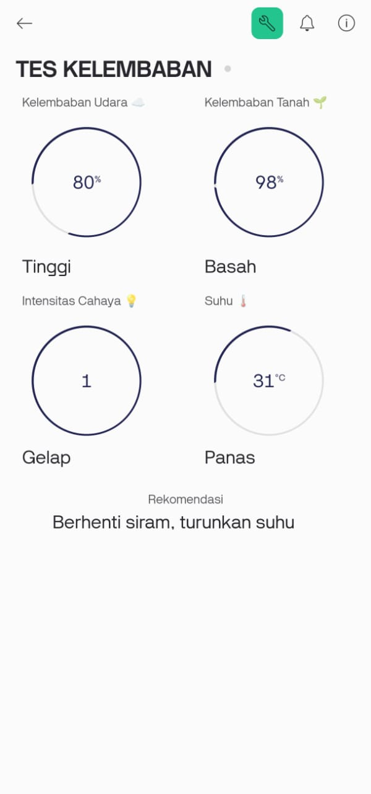
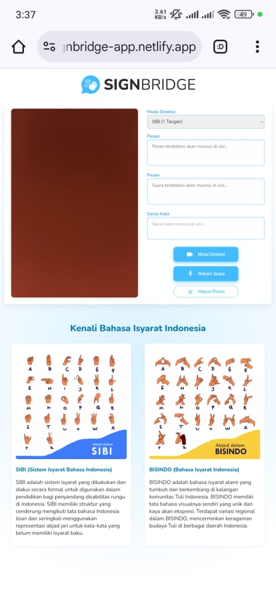

Hello, I'm Wahyu Adji Agus Saputra
I'm a
A motivated Mechatronics Engineering student with a track record in competitive robotics and a deep interest in machine learning.
About Me

Mechatronics Engineering Student, Yogyakarta State University
I am a highly motivated Mechatronics Engineering student with a proven track record of excellence in competitive robotics and a deep passion for machine learning and software development. I combine hands-on hardware programming experience with a strong foundation in AI/ML to build end-to-end intelligent systems.
Main Skills:
Projects & Awards

IoT Project: Shroomery
Engineered a real-time mushroom monitoring system with automated environmental controls to optimize growth conditions and ensure ideal harvests.

AI Project: Signbridge
Developed an innovative two-way sign language translator that detects both SIBI and BISINDO gestures, converting them into real-time text and audio to bridge communication